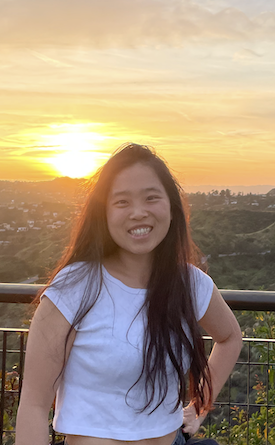

About
I research and teach digital media, cultural studies and the sociology of work, with a particular interest in creator cultures, social media, women's experience of eating,and digital labour. I am currently a Lecturer in Media at City St George’s, University of London. Previously, I taught Sociology at the University of Cambridge, where I completed my MPhil and PhD.
My research takes a comparative approach to understanding how people make sense of, negotiate and resist digital platforms across different social, cultural and political contexts. My previous work examined women influencers on Instagram and Xiaohongshu (Red), exploring how they navigate different platform economies while confronting similar gendered expectations and forms of creative and precarious work.
Another strand of my research reflects on questions of knowledge production. I grew up in 柏树庄 (Bǎishùzhuāng), a small village in northern China, before my academic journey brought me to the West. Moving between these worlds has made me increasingly attentive to my own “in-between” position as a researcher: What do I see? How do I see it? From where, and for whom?
Outside research and teaching, I am a keen cook, gardener and traveller. I also run sometimes.